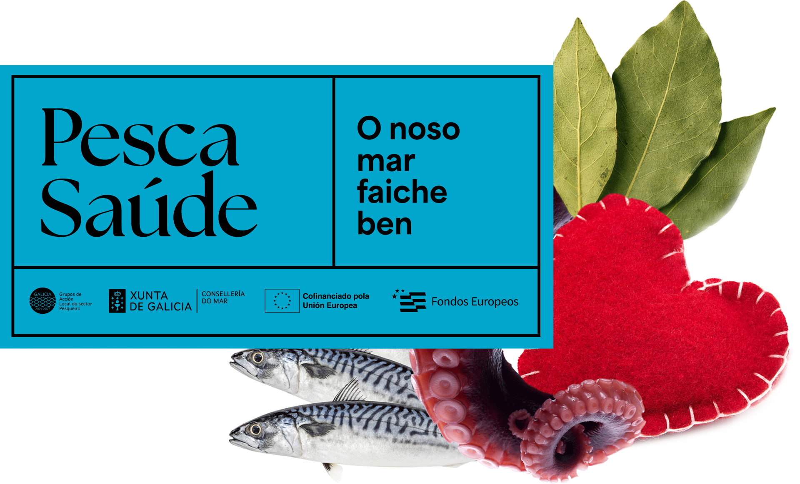

Consumir produtos pesqueiros é bo para ti e, con Pesca Saúde, tamén ten premio. Consigue descontos nos establecementos adheridos, participa en sorteos e gozar de demostracións de cociña en vivo.
Pesca Saúde é un proxecto de cooperación promovido polos Grupos de Acción Local do Sector Pesqueiro (GALP). Alíase coa Estratexia Galega de Saúde Comunitaria 2023-2027 no seu compromiso para o fortalecemento da saúde da poboación e conta co apoio da Dirección Xeral de Saúde Pública (Subdirección Xeral de Estilos de Vida Saudables) da Consellaría de Sanidade.